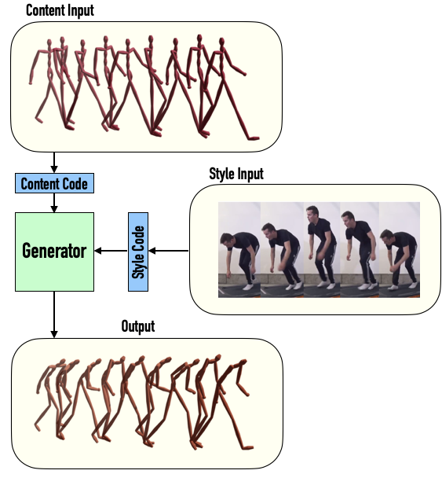
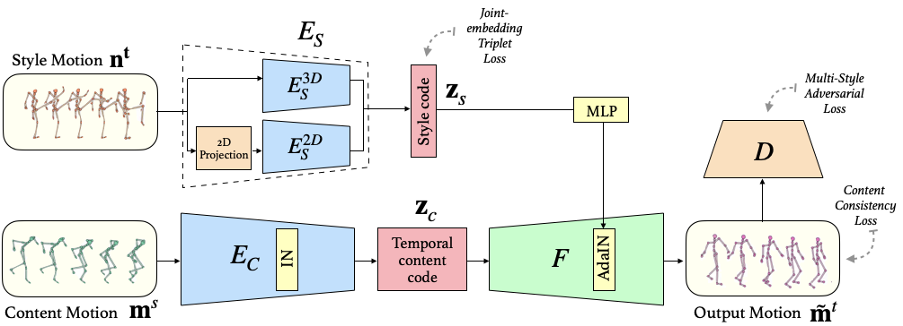
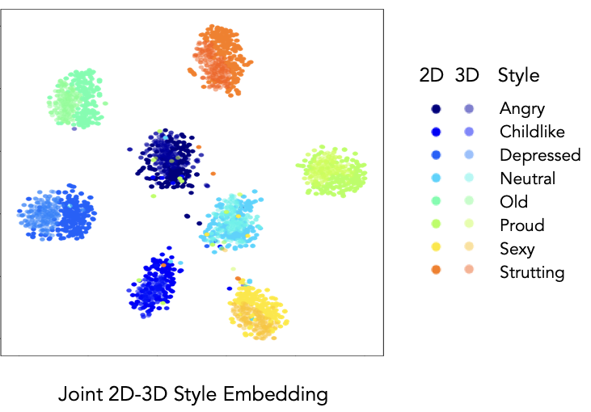

Abstract & Method
We present a novel data-driven framework for motion style transfer, which learns from an unpaired collection of motions with style labels, and enables transferring motion styles not observed during training.
Furthermore, our framework is able to extract motion styles directly from videos, bypassing 3D reconstruction - an ability which enables one to extend the set of style examples far beyond motions captured by MoCap systems.

Our style transfer network encodes motions into two latent codes, for content and for style, each of which plays a different role in the decoding (synthesis) process. While the content code is decoded into the output motion by several temporal convolutional layers, the style code modifies deep features via temporally invariant adaptive instance normalization (AdaIN).

While the content code is encoded from 3D joint rotations, we learn a common embedding for style from either 3D or 2D joint positions, enabling style extraction from videos.
